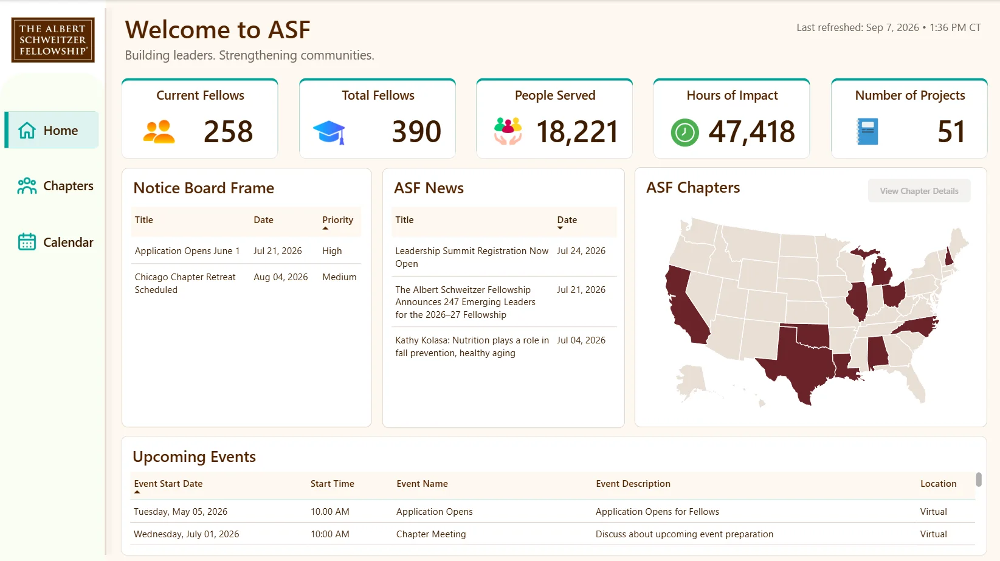
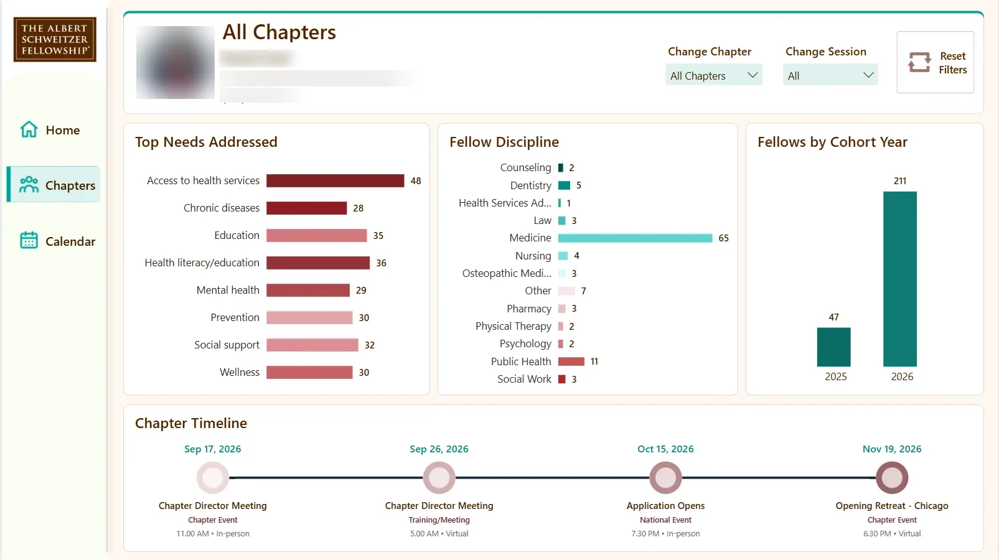
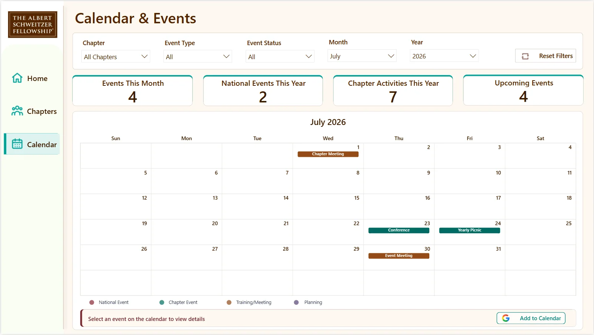

DATA SYSTEMS · NONPROFIT
Turning scattered program data into a system people can use.
At the Albert Schweitzer Fellowship, my work sits between data infrastructure, operations, reporting, and analysis. The national dataset now spans more than 20,000 records, and the goal is not simply to store it. It is to make program information easier to trust, find, and use.
THE STARTING POINT
When I joined, each process had grown on its own.
- Data in many places. Program, survey, fellow, alumni, donor, and partner records lived in different tools with different structures.
- A lot of manual tracking. Repeated hand-offs meant extra work and records that did not always match.
- Summaries built by hand. Each leadership update meant pulling the story together from scratch.
WHAT CHANGED
I introduced structure first, so everything downstream got easier.
- One connected model. I translated operational needs into linked Airtable tables, shared IDs, and clear field rules.
- Built-in quality. Validation rules and approval steps catch problems when data is entered, not months later.
- Automation. Workflows connect Airtable, HubSpot, and Qualtrics so routine updates happen without copy-and-paste.
- Reporting. The same clean data now feeds Power BI dashboards, survey analysis, and executive reports.
WORK IN MOTION
The dashboards in use.
One example from a wider set of systems I have built at ASF, including automations, surveys, and CRM integration.
Personal details (a staff photo, name, and contact information) are blurred in the chapter view for privacy.

National overview
The home page gives anyone at ASF a one-screen summary of the fellowship.
- Headline cards for current fellows, total fellows, people served, hours of impact, and projects
- A map highlighting the states with active chapters
- Notice board, ASF news, and upcoming events pulled from the same database

Chapter view
Filter by chapter and session to see what each chapter is working on.
- Top community needs addressed, such as access to health services and chronic disease
- Fellow disciplines, from medicine to public health and social work
- Fellows by cohort year and a timeline of upcoming chapter events

Calendar & events
A shared calendar replaces scattered event lists and email threads.
- Filter by chapter, event type, status, month, and year
- Counts of events this month, national events, and chapter activities
- Color-coded events with an “Add to Calendar” link